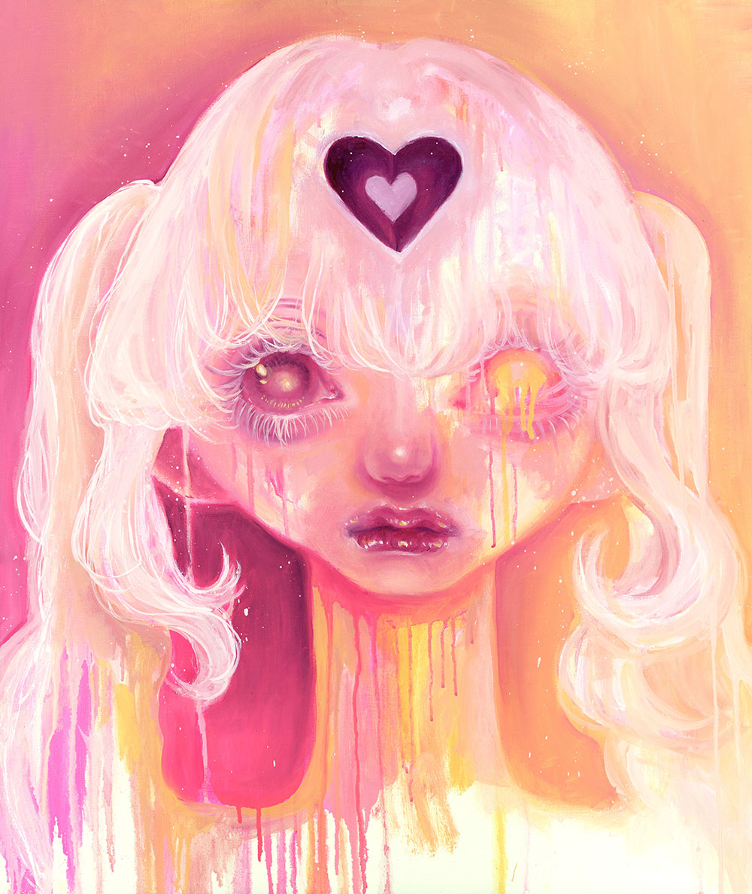
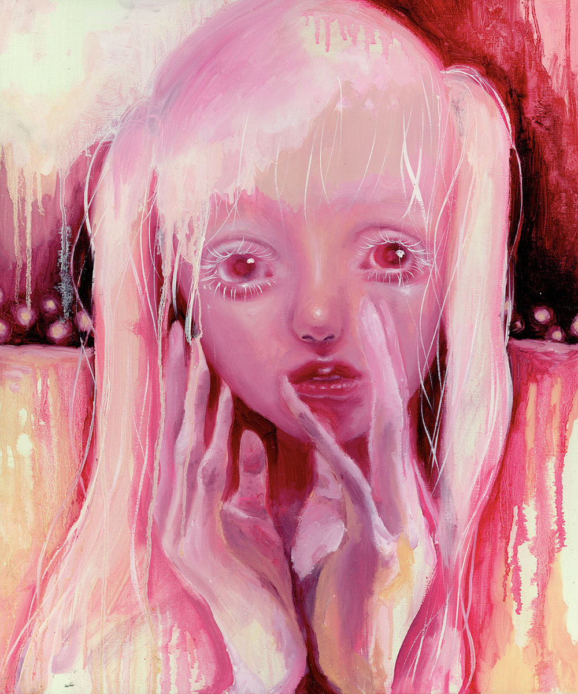

ギャラリー

Heart shaped hearts

Heartgazing

花殻を摘んで

上書き破損
自己紹介
優しさと暴力性を同時に表現できるピンクによって、あなたとわたしとの共鳴という、愛の萌芽を育みたい。
展示会
お問い合わせ
メール: madokasakurado@gmail.com
画家、作家
Heart shaped hearts

Heartgazing

花殻を摘んで
上書き破損
優しさと暴力性を同時に表現できるピンクによって、あなたとわたしとの共鳴という、愛の萌芽を育みたい。
メール: madokasakurado@gmail.com